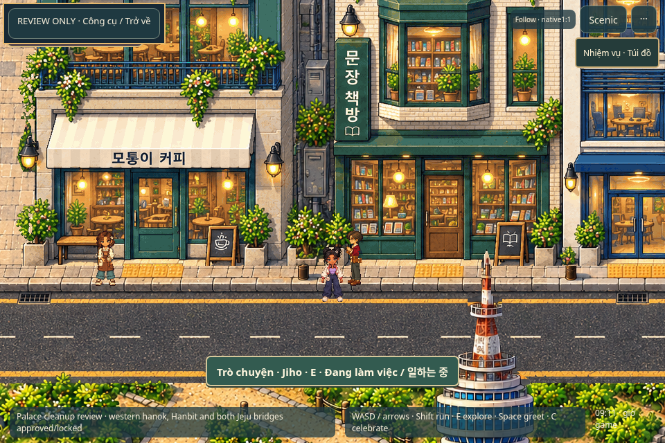
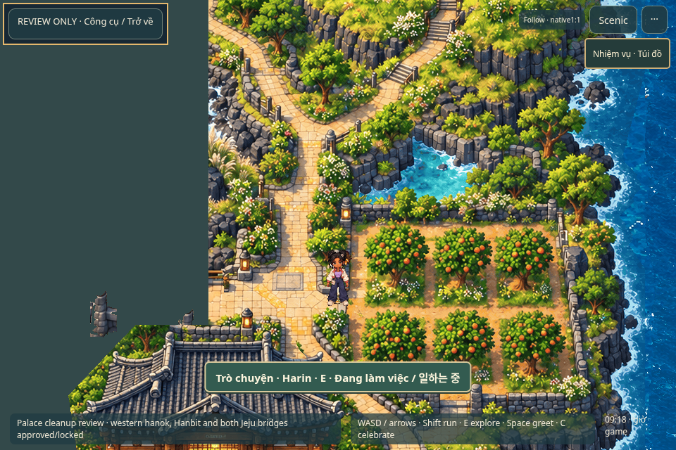
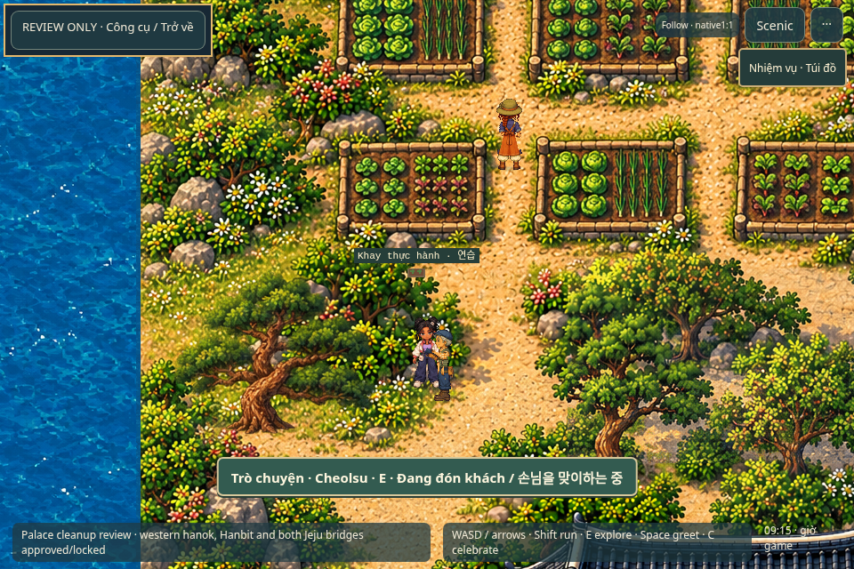
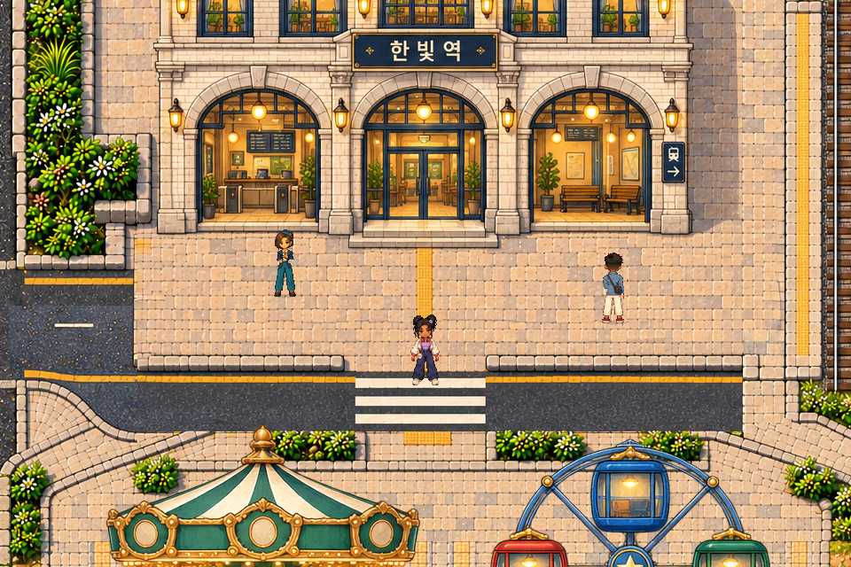
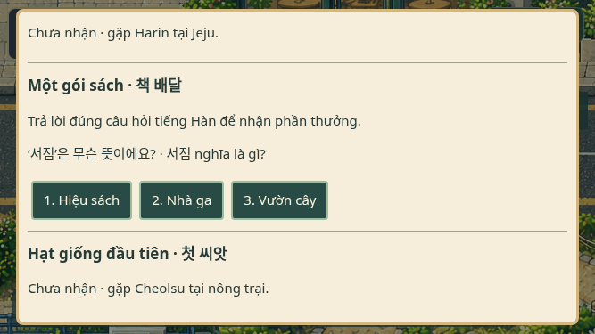

Ứng viên riêng tư, chưa cập nhật GitHub Pages. Cần chủ dự án duyệt đúng manifest mới trước khi công khai. Bản26 hiện tại và snapshot20 giữ nguyên. Không Phase3B-D, main merge hay thay đổi v0.5.
Chơi từ vị trí bình thường · Review Portal /26 NPC / Daily Life · Manifest chính xác · QA chi tiết
Bỏ4 phụ kiện đầu: kẹp vỏ sò, nơ cài tóc, mũ lưỡi trai, mũ làm vườn.24 cosmetics còn hoạt động;28 định nghĩa cũ và nguồn được lưu lịch sử. Tóc gốc, mặt, trang phục và4 phụ kiện khác giữ nguyên. Preset cũ tự bỏ lựa chọn đã nghỉ, không mất nhân vật hoặc tiến độ.
Câu hỏi nguyên gốc trình độ bắt đầu. Demo cục bộ, chưa đồng bộ Tiếng Hàn So Easy; nội dung giáo dục chờ duyệt tiếng Hàn. Town Coins/XP là thông số thử nghiệm. Không quảng cáo; không nhân đôi điểm thành thạo.
Nhận nhiệm vụ qua hội thoại NPC → làm tại vị trí thật → trả lời sai/câu khác → đúng/nhận thưởng → reload.

Bằng chứng phần thưởngNhận nhiệm vụ qua hội thoại NPC → làm tại vị trí thật → trả lời sai/câu khác → đúng/nhận thưởng → reload.

Bằng chứng phần thưởngNhận nhiệm vụ qua hội thoại NPC → làm tại vị trí thật → trả lời sai/câu khác → đúng/nhận thưởng → reload.

Bằng chứng phần thưởngSửa4 cửa vào và2 mask cầu trên mặt sàn hiện có;9 tuyến đi thật đạt. Không đổi pixel thế giới. Các marker cũ trên lan can/đất không công cộng, ferry tương lai và side-garden vẫn ghi rõ trong báo cáo. Không mở nước/tường cho đủ số PASS.
Overlay chẩn đoán trên cùng native artwork; đỏ là collision. Đây không phải screenshot gameplay.
Overlay chẩn đoán trên cùng native artwork; đỏ là collision. Đây không phải screenshot gameplay.
Overlay chẩn đoán trên cùng native artwork; đỏ là collision. Đây không phải screenshot gameplay.
Mở collision overlay · Toàn bộ mask native · Overlay Phaser thật
PNG lấy từ canvas POST_RENDER ở zoom1, nearest-neighbor, camera integer; không upscale/sharpen. Video H264 để xem thuận tiện, không phải chứng cứ pixel-exact.


Ảnh mobile dùng fixture quiz-stage được ghi rõ; không giả vờ đã chơi toàn bộ nhiệm vụ trên điện thoại thật.3 vòng desktop phía trên là tương tác liên tục trong thế giới thật. Android/iPhone vật lý và hardware GPU: NOT TESTED.
| Kiểm tra | Kết quả | Chứng cứ |
|---|---|---|
| Typecheck / assets / lint / formatting / production build | PASS | Current commands completed; build uses canonical rights gate. Build bundle-size advisory retained. |
| Unit tests | PASS | 181 fresh tests; quest order, invalid references, atomic reward receipts, wrong-answer rotation, reload and retired equipment. |
| Full regression command | WARN | 71 passed / 1 failed / 0 skipped. Obsolete removed-hat expectation retained as FAIL in original report, not relabeled. |
| Updated wardrobe/Studio follow-up | PASS | 14/14 actual browser tests, including the replacement retired-hat test and unaffected accessory persistence/preview/cache. |
| New12-character legacy equipment + mobile question + local collision E2E | PASS | 3/3 browser tests; all12 actors walk/run/idle without retired equipment;667x375 touch wrong/right answer and close; source data/controls preserved. |
| Three actual in-world quest loops | PASS | Actual isolated packaged Phaser: accept, world interaction, return/recipient, wrong→different question→correct, reward, reload. No teleport or UI-only completion. |
| Nine actual navigation sequences | PASS | Palace,retail,station,farm,coast,Namsan,amusement,JejuA,JejuB. Actual held WASD/Shift over canonical floor; no collision override by driver. |
| Native renderer | PASS | 5 genuine POST_RENDER native canvas PNGs, zoom1, nearest sampling, integer camera, one player. No art processing. |
| Approved asset preservation | PASS | 9180 prior world/player/NPC/cosmetic/source files SHA256 unchanged; old masks preserved; two new derived collision chunks only. |
| 26 NPC identities/interactions/Daily Life | PASS | Fresh full-suite resident14/visitor6/archive6 real movements/dialogues, population bounds, schedule interruption/resume and identity checks. |
| Legacy blocked/scenery markers | WARN | Jeju3500,3610 planted edge; old3180,4020 ferry marker off deck; palace-west1740,1090 in retained garden. Metadata not silently moved. See collision review. |
| Korean educational approval / gameplay artistic approval | NOT TESTED | Original beginner KO/VI data awaits human review. Local demo only, no website history/proficiency/account sync. |
| Real Android/iPhone / hardware GPU | NOT TESTED | Desktop Chromium and mobile emulation only; no physical-device or hardware performance certification. |
| New public exposure / Pages update | NOT TESTED | Not authorized yet for changed manifest. Existing live26 Pages/v0.5 unchanged; no deployment performed. |
Hash audit9.180 tệp gốc · Quest readback · Real navigation · Video hashes/no audio
Duyệt đủ9 câu tiếng Hàn · 24 cosmetics /39 variants /0 retired files · Ước tính texture, không chứng nhận thiết bị thật · Các lỗi đầu tiên và cách sửa
Các giới hạn còn lại · Đề xuất tiếp cận3 marker cũ, chưa áp dụng
Duyệt gameplay, lời học tiếng Hàn và đúng manifest của candidate này trước khi công khai. Đây không phải chứng nhận pháp lý hay phát hành thương mại. Quyền Output và giới hạn bên thứ ba kế thừa hồ sơ chủ dự án đã cung cấp; không yêu cầu26 giấy phép riêng. Không thêm hình, nhạc, giọng, ảnh chân dung hoặc nguồn bên thứ ba mới.